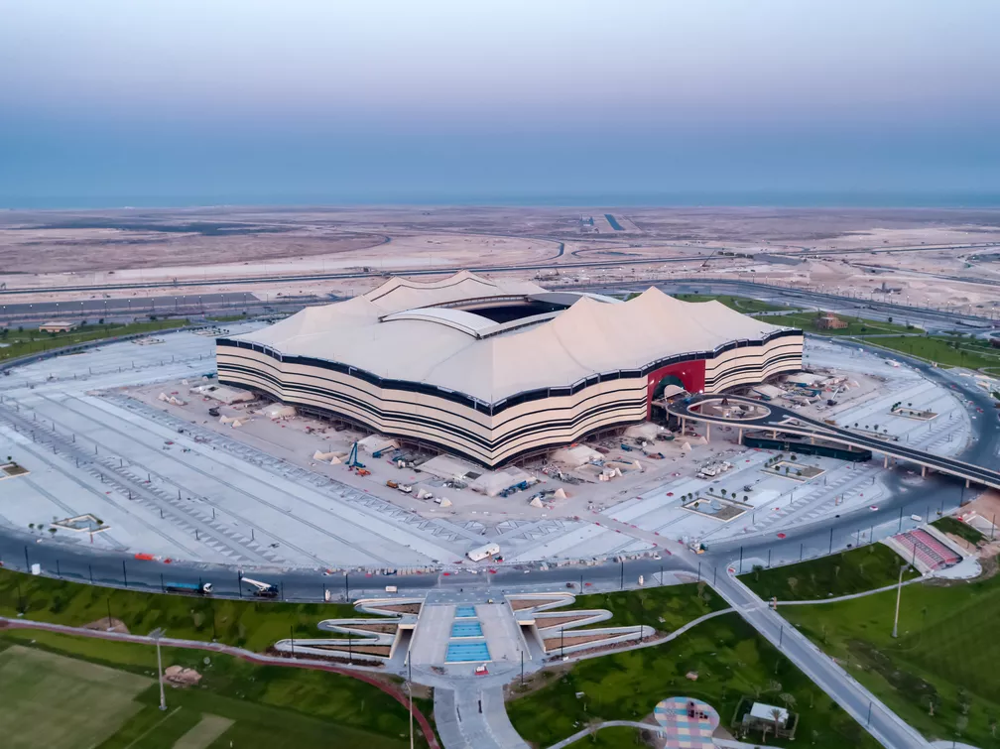
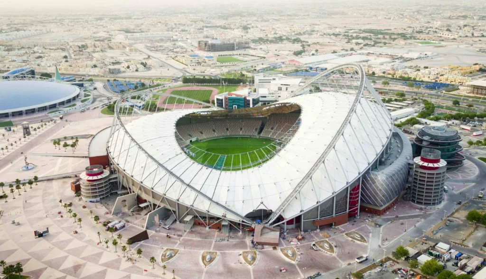
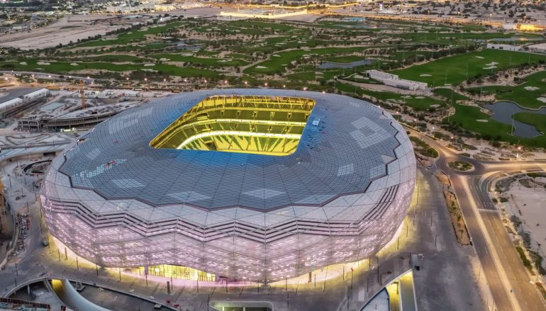
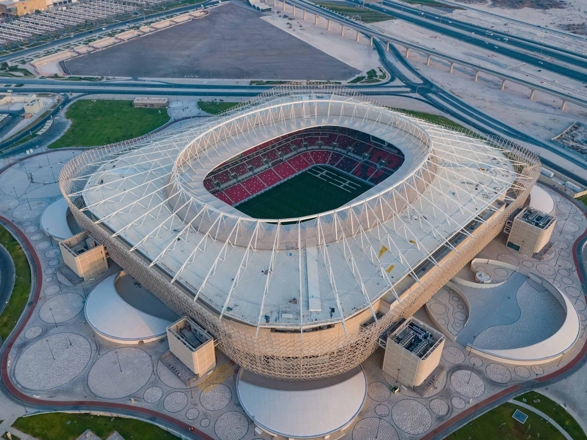
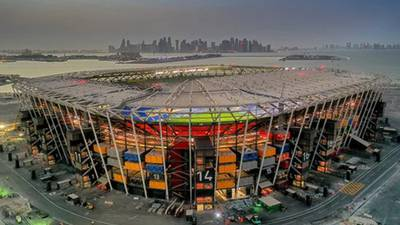
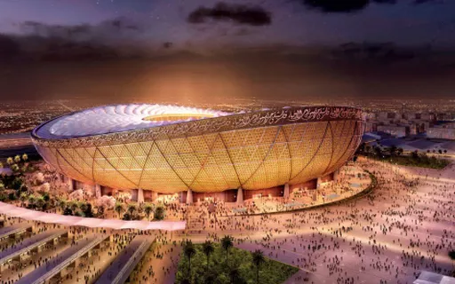

Estadios
Estádio Al-Bayt
Próximos Jogos
| A | Qatar x Equador | 21/11 | 13h |
| F | Marrocos x Croácia | 25/11 | 7h |
| B | Inglaterra x EUA | 25/11 | 16h |
| E | Espanha x Alemanha | 27/11 | 16h |
| A | Holanda x Qatar | 29/11 | 12h |
| E | Indefinido x Alemanha | 1/12 | 16h |
Estádio Internacional Khalifa
que servirá como ponto de encontro para os torcedores
durante a Copa do Mundo de 2022.
Próximos Jogos
| B | Inglaterra x Irã | 21/11 | 10h |
| E | Alemanha x Japão | 23/11 | 10h |
| A | Holanda x Equador | 25/11 | 13h |
| F | Croácia x Canadá | 27/11 | 13h |
| A | Equador x Senegal | 29/11 | 12h |
| E | Japão x Espanha | 1/12 | 16h |
Estádio Al-Janoub

Próximos Jogos
| D | França x Indefinido | 22/11 | 16h |
| G | Suíça x Camarões | 24/11 | 16h |
| D | Tunísia x Indefinido | 26/11 | 7h |
| G | Camarões x Sérvia | 28/11 | 7h |
| D | Indefinido x Dinamarca | 30/11 | 12h |
| H | Gana x Uruguai | 2/12 | 12h |
Estádio da Cidade da Educação
Próximos Jogos
| D | Dinamarca x Tunísia | 22/11 | 10h |
| H | Uruguai x Coreia do Sul | 24/11 | 10h |
| C | Polônia x Arábia Saudita | 26/11 | 10h |
| H | Coreia do Sul x Gana | 28/11 | 10h |
| D | Tunísia x França | 30/11 | 10h |
| H | Coreia do Sul x Portugal | 2/12 | 12h |
Ahmad Bin Ali Stadium
Próximos Jogos
| B | Estados unidos x Indefinido | 21/11 | 16h |
| F | Bélgica x Canadá | 23/11 | 16h |
| B | Indefinido x Irã | 25/11 | 7h |
| E | Japão x Indefinido | 27/11 | 7h |
| B | Indefinido x Inglaterra | 29/11 | 16h |
| F | Croácia x Bélgica | 1/12 | 12h |
Estádio Al-Thumama

Próximos Jogos
| A | Senegal x Holanda | 21/11 | 7h | |
| E | Espanha x Indefinido | 23/11 | 13h | Education City |
| A | Catar x Senegal | 25/11 | 10h | |
| F | Bélgica x Marrocos | 27/11 | 10h | |
| B | Irã x Estados Unidos | 29/11 | 16h | |
| F | Canadá x Marrocos | 1/12 | 12h |
Estádio 974(Porto de Doha)
Próximos Jogos
| C | México x Polônia | 22/11 | 13h |
| H | Portugal x Gana | 24/11 | 13h |
| D | França x Dinamarca | 26/11 | 13h |
| G | Brasil x Suíça | 28/11 | 13h |
| C | Polônia x Argetina | 30/11 | 16h |
| G | Sérvia x Suíça | 2/12 | 16h |
Estádio Nacional de Lusail
Próximos Jogos
| C | Argentina x Arábia Saudita | 22/11 | 7h |
| G | Brasil x Sérvia | 24/11 | 16h |
| C | Argetina x México | 26/11 | 16h |
| H | Portugal x Uruguai | 28/11 | 16h |
| C | Arábia Saudita x México | 30/11 | 16h |
| G | Camarões x Brasil | 2/12 | 16h |